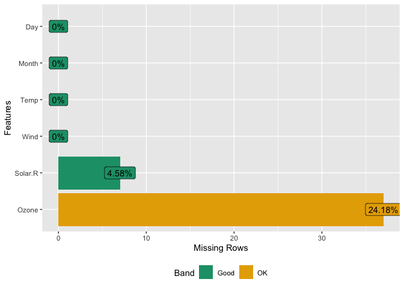

Background
Exploratory Data Analysis (EDA) is the initial and an important phase of data analysis. Through this phase, analysts/modelers will have a first look of the data, and thus generate relevant hypothesis and decide next steps. However, the EDA process could be a hassle at times. This R package aims to automate most of data handling and visualization, so that users could focus on studying the data and extracting insights.
Installation
The package can be installed directly from CRAN.
However, the latest stable version (if any) could be found on GitHub, and installed using devtools package.
if (!require(devtools)) install.packages("devtools")
devtools::install_github("boxuancui/DataExplorer")If you would like to install the latest development version, you may install the develop branch.
Examples
The package is extremely easy to use. Almost everything could be done in one line of code. Please refer to the package manuals for more information. You may also find the package vignettes here.
Report
To get a report for the airquality dataset:
To get a report for the diamonds dataset with response variable price:
Visualization
Instead of running create_report, you may also run each function individually for your analysis, e.g.,
| rows | 153 |
| columns | 6 |
| discrete_columns | 0 |
| continuous_columns | 6 |
| all_missing_columns | 0 |
| total_missing_values | 44 |
| complete_rows | 111 |
| total_observations | 918 |
| memory_usage | 6,376 |


## Left: view frequency distribution of all discrete variables
plot_bar(diamonds)
## Right: view `price` distribution of all discrete variables
plot_bar(diamonds, with = "price")


## View quantile-quantile plot of all continuous variables by feature `cut`
plot_qq(diamonds, by = "cut")

## Scatterplot `price` with all other continuous features
plot_scatterplot(split_columns(diamonds)$continuous, by = "price", sampled_rows = 1000L)
#> 2 features with more than 5 categories ignored!
#> color: 7 categories
#> clarity: 8 categories

Feature Engineering
To make quick updates to your data:
## Group bottom 20% `clarity` by frequency
group_category(diamonds, feature = "clarity", threshold = 0.2, update = TRUE)
## Group bottom 20% `clarity` by `price`
group_category(diamonds, feature = "clarity", threshold = 0.2, measure = "price", update = TRUE)
## Dummify diamonds dataset
dummify(diamonds)
dummify(diamonds, select = "cut")
## Set values for missing observations
df <- data.frame("a" = rnorm(260), "b" = rep(letters, 10))
df[sample.int(260, 50), ] <- NA
set_missing(df, list(0L, "unknown"))
## Drop columns
drop_columns(diamonds, 8:10)
drop_columns(diamonds, "clarity")Articles
See article wiki page.